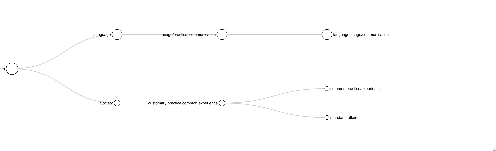
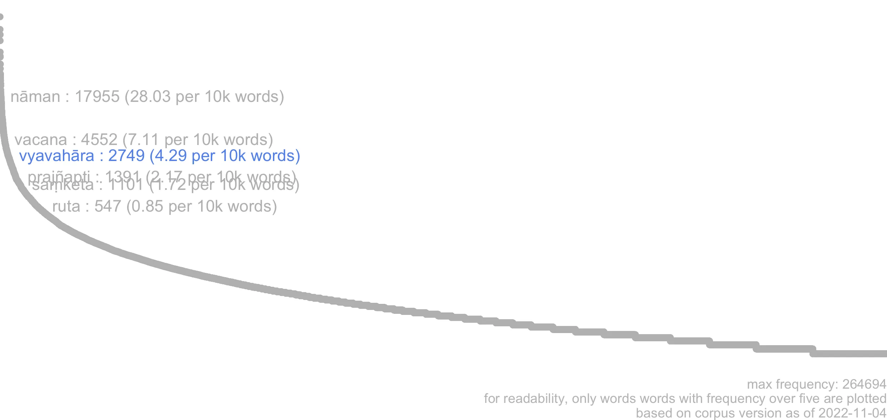
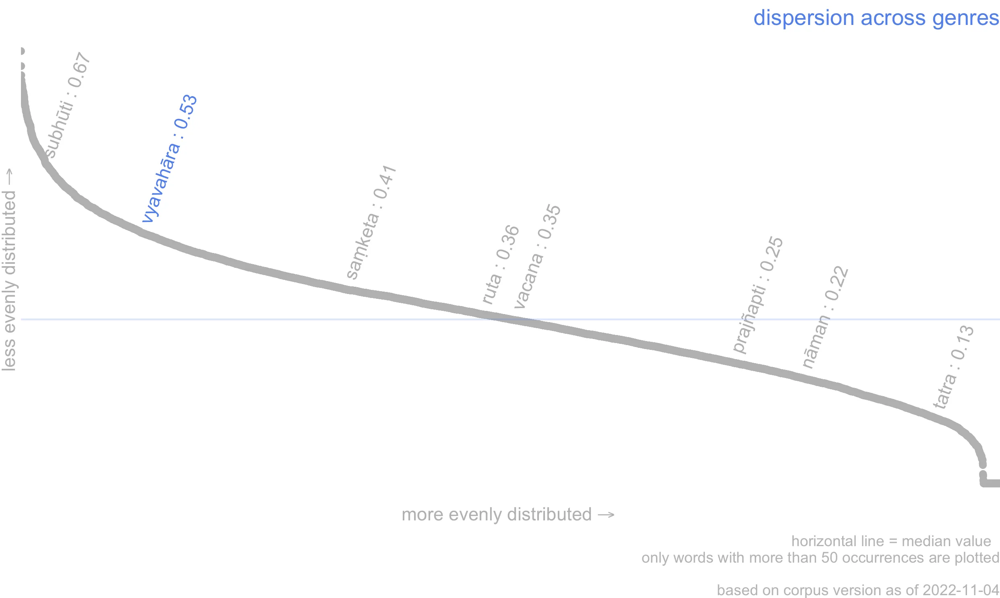
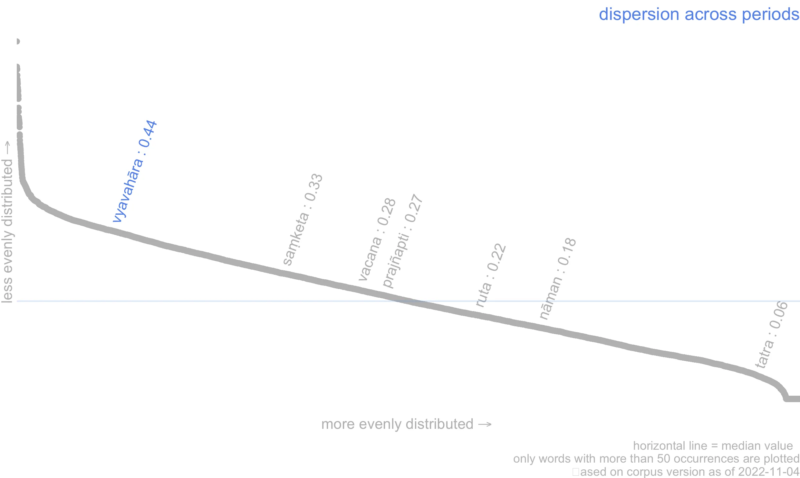
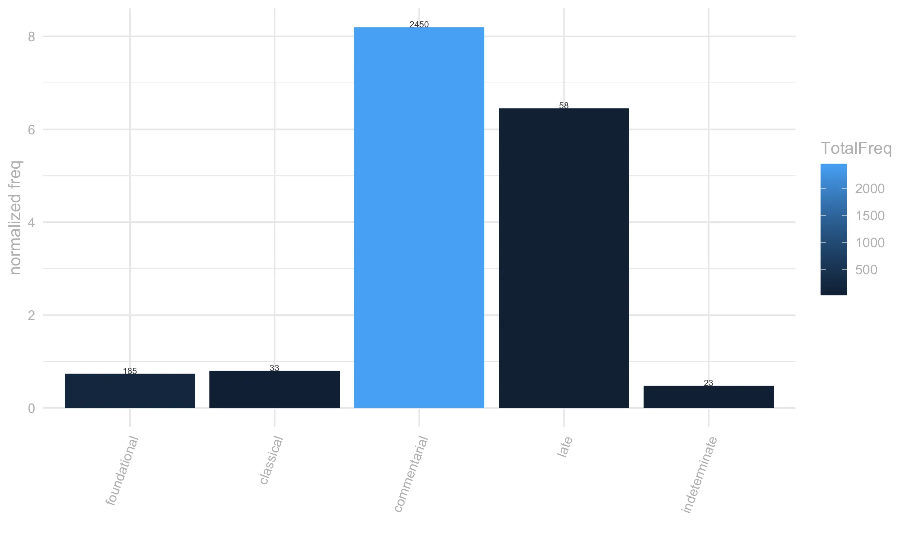
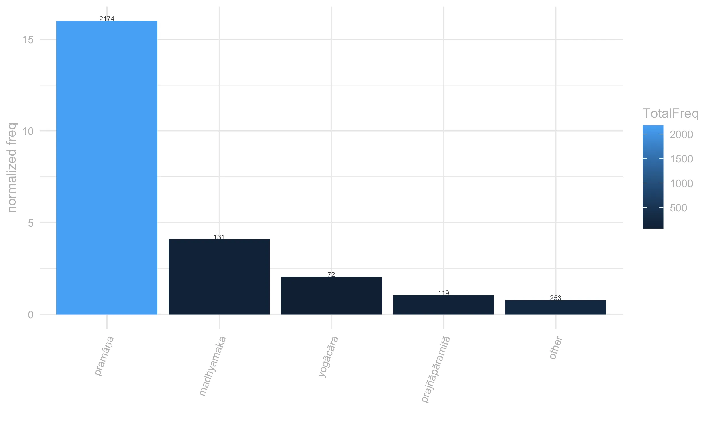
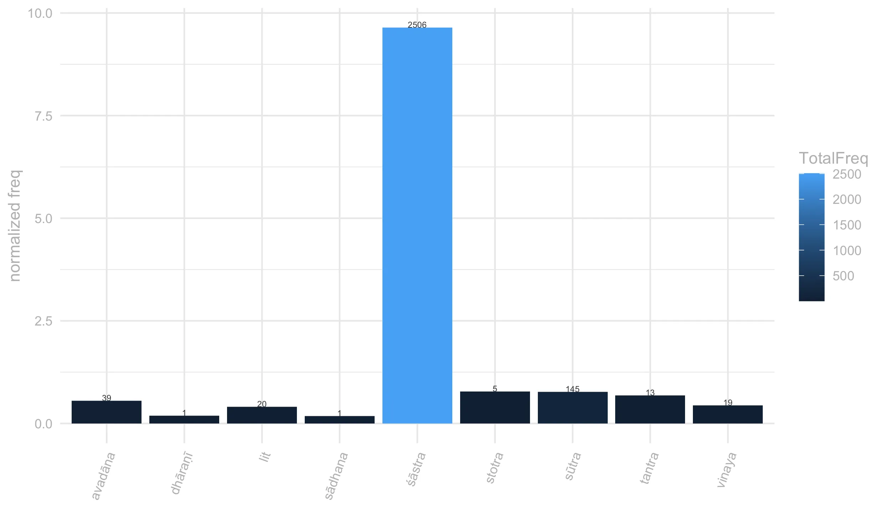
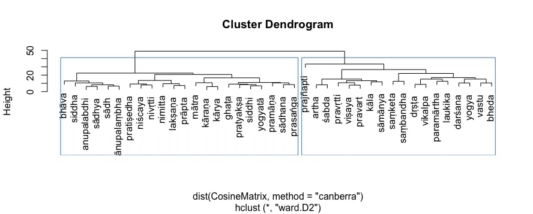

17 vyavahāra
17.1 overview
vyavahāram an-āśritya paramārtho na deśyate / paramārtham an-āgamya nirvāṇaṃ n^ādhigamyate // [bhāvanākrama, 177] “Without relying on conventions, the sublime meaning cannot be taught. Without understanding the sublime meaning, one will not attain nirvana.” [Batchelor]
At its core, vyavahāra expresses the idea of common practice. (customary practice/common experience). Within this broad sense, its precise meaning is rather malleable. It can point to a specific behaviour or acquire a more subjective tinge and take up a meaning closer to experience, typically ordinary, everyday experience. 1
Often context also narrows down vyavahāra’s meaning by highlighting which kind of common practices it refers to. In our corpus, these tends to be primarily communication and business practice. These contextual specifications yield the meanings of mundane affairs and language usage.
The sense of mundane affairs, predominant in narrative literature, typically refers to trading and business activities,2 but can be stretched to also include the more specialized sense of legal proceedings, which is rare in our corpus but well attested in non-Buddhist sources.3
The sense of language usage (language usage/communication practice), predominant in sūtras and earlier śāstras, typically brings out the contrast between the inexpressibility of reality and the necessity to communicate it in words.4 Translations frequently represent this sense of vyavahāra as pertaining to “linguistic conventions”; however the conventional aspect of language as a set of agreed upon symbols is more precisely captured by the near synonym saṃketa. Vyavahāra appears rather to foreground the practical, de-facto, aspect of communication.5
It is often very difficult to tease apart the senses of vyavahāra. The boundaries between the sense of ordinary experience and language usage are especially blurry, as it often the case in Mahāyāna literature, where the cognitive and linguistic dimensions are deeply interrelated. Thus, a phrase like kāyādivyavahāro may refer to the words ‘body’ and so on or to the ordinary experience of conceiving people has having bodies.6 This ambiguity is notable in the context of the two truths, where vyavahāra may indicate the Dharma as it is taught verbally, as well as the set of every day experiences any teaching inevitably needs to rely upon (see also section 3 below).

17.2 frequency
Vyavahāra is a fairly frequent word with a very uneven distribution across our corpus, with its frequency peaking in the ‘commentarial’ period, between the VI and XI century. This is due mostly to the type of topics to which it is associated.
It is rare in narrative literature, where according to our sampled sentences it instantiates mostly the sense of mundane affairs, and it is not very frequent in sūtras and early śāstras, where it is loosely tied to the discourse on language and the two truths. By contrast, it is hugely over-represented in later philosophical literature, where it appears to be strongly related to the pramāṇa discourse (see by freq by tradition graph in the next section).
Frequency and dispersion are calculated over version 1.9 of the ~7-million words Segmented Corpus of Buddhist Sanskrit (10.5281/zenodo.7296548).
Dispersion is calculated with Gries’ deviation of proportion formula (Gries, S. 2008. Dispersion and adjusted frequencies in corpora. International Journal of Corpus Linguistics, 13(4): 403-437)
Frequency and dispersion are calculated over version 1.9 of the ~7-million words Segmented Corpus of Buddhist Sanskrit (10.5281/zenodo.7296548).
Dispersion is calculated with Gries’ deviation of proportion formula (Gries, S. 2008. Dispersion and adjusted frequencies in corpora. International Journal of Corpus Linguistics, 13(4): 403-437)
Frequency and dispersion are calculated over version 1.9 of the ~7-million words Segmented Corpus of Buddhist Sanskrit (10.5281/zenodo.7296548).
Dispersion is calculated with Gries’ deviation of proportion formula (Gries, S. 2008. Dispersion and adjusted frequencies in corpora. International Journal of Corpus Linguistics, 13(4): 403-437)
Frequency and dispersion are calculated over version 1.9 of the ~7-million words Segmented Corpus of Buddhist Sanskrit (10.5281/zenodo.7296548).
Dispersion is calculated with Gries’ deviation of proportion formula (Gries, S. 2008. Dispersion and adjusted frequencies in corpora. International Journal of Corpus Linguistics, 13(4): 403-437)




frequency and dispersion are calculated over version 1.9 of the ~7-million words Segmented Corpus of Buddhist Sanskrit (10.5281/zenodo.7296548), as opposed to the smaller corpus used for the Visual Dictionary and Thesaurus of Buddhist Sanskrit (see dictionary documentation for details).
For the sake of readability, only words occurring at least 5 times in the corpus have been plotted on the frequency and dispersion curves.
Dispersion is calculated with Gries’ deviation of proportion formula (Gries, S. 2008. Dispersion and adjusted frquencies in corpora. International Journal of Corpus Linguistics, 13(4): 403-437).
the sense by genre plot is based on a sample of sentences that we have manually annotated with semantic information for the Visual Dictionary and Thesaurus of Buddhist Sanskrit. For details about our sampling and annotation procedures see the dictionary documentation page.
17.3 register
Based on our sampled sentences, the distribution of vyavahāra’s senses across text types suggests that the meaning mundane affairs might have been closer to general language use, whereas the sense of language usage, which is mostly instantiated in philosophical literature, might have belonged to a more scholastic register. Still, despite the high frequency of vyavahāra in pramāṇa literature, this word does not seem to have undergone a process of technical specialization, at least not along the semantic lines drawn here. In fact, vyavahāra appears especially ambiguous in epistemological literature, where it is not always clear (at least not to readers less than well-versed in pramāṇa) whether vyavahāra refers to a verbal assertion regarding something (e.g. asserting that something is absent), or to the ordinary experience of that thing (experiencing that something is absent) or, again, to the common practice generally adopted towards it (treating it as absent).7 It may well be possible that these semantic distinctions are but an artefact of translation, and the Sanskrit word was fundamentally ambiguous.
A passage from the Tarkābhāṣā is interesting in this regard. A parallel construction between vyavahāra √kṛ, which indicates a behaviour, and vyavahāra √sādh, which suggest a proposition, and the explication of trividho vyavahāra as including both kayika and vācika vyavahāra suggest either an intentional pun or that vyavahāra was perceived as intrinsically vague and able to express different semantic nuances within a single passage without compromising its coherence: abhāvavyavahāras tu mūḍhaṃ prati anupalambhena sādhyate / tathā hikaścinmūḍho rajaḥprabhṛtiṣu sāṅkhyaprasiddheṣu guṇeṣvanupalambhena pravartitābhāvavyavahāro ’pi punaḥ sarvaṃ sarvatrāstīti svasiddhāntābhyāsāt kvā ’pi pradeśādau ghaṭānupalambhe satyapi nābhāvavyavahāraṃ karotīty anupalambhena trividho vyavahāraḥ kāryate /tatra niḥśaṅkarāmanāgamanalakṣaṇaḥ kāyiko vyavahāraḥ / ghaṭo nāstīti vācikaḥ / īdṛśa eva antarjalpākāro mānasikaś ceti / (Tarkabhāṣā, 30)8
The height of the bars in the charts indicates the normalized frequency of the lemma per 10,000 words, the colour of the bars indicates the absolute frequency. The brighter the colour, the highest the absolute frequency of the lemma. The absolute frequency of the lemma is also reported in the numbers on top of each bar.
The height of the bars in the charts indicates the normalized frequency of the lemma per 10,000 words, the colour of the bars indicates the absolute frequency. The brighter the colour, the highest the absolute frequency of the lemma. The absolute frequency of the lemma is also reported in the numbers on top of each bar.


17.4 context
The word vyavahāra occurs in three main contexts: (1) the context of trade and affairs, (2) the Mahāyana discourse on language and the two truths and (3) in the context of pramāṇa, especially in the discussion of anupalabdhi. Statistically, the first is too infrequent and lexically varied to yield any keywords, while the others are represented by the keywords displayed in the wordcloud below. Notably, statistical analysis of the immediate context of vyavahāra in our corpus leads to a neat distinction between pramāṇa contexts and all the rest (see dendogram tab below), suggesting that vyavhāra is woven in markedly different lexical patterns in the epistemological literature compared to the rest of the corpus.
The size of words in the wordcloud is proportional to the Log Ratio. (for information on this statistics see Hardie 2014 )
The dendogram is based on the cosine similarity of each keyword within the immediate context of vyavahāra (5 words window to the left and right).


the wordcloud displays words that are statitistically over-represented in the immediate context of the lemma (defined as the words that occur in the same sentence as the lemma), compared to their overall frequency in the rest of the ~7-million words Segmented Corpus of Buddhist Sanskrit (version 1.9 has been used for this entry).
The statistics used for keyness are Log Likelyhood over 10 and Log Ratio over 2.5. For the sake of readability, only keywords that occur at least 20 times in the lemma’s citations are included in the wordcloud and table.
The size of words in the wordcloud is proportional to the Log Ratio. (for information on this statistics see Hardie 2014 )
the number that shows when hovering over the words is the Log Ratio
Words in red point to the sense ‘language usage’; those in blue to the sense ‘common practice/ordinary experience’ and words in grey are characteristic of the pramāṇa context, with the darker ones being the most salient in the context of vyavahāra.
The dendogram is based on the cosine similarity of each keyword within the immediate context of vyavahāra (5 words window to the left and right). The distance is calculated using the canberra method as implemented in R 4.0.5. For hierarchical clustering we used the ward.D2 method.
17.5 connotation
Vyavahāra has a neutral connotation, as befits the generic character of its core sense ‘common practice’. It retains a mostly neutral connotation also in the sense of verbal practice, contrary to most o words related to the Mahāyāna discourse on language, which tend to acquire a negative semantic prosody in sūtras. This is because vyavahāra is seen mostly as a necessary, if imperfect, bridge towards paramārtha, rather than as a source of delusion. The sense of mundane affairs occurs in a positive prosody in narrative literature, but, predictably, assumes a negative tinge in pratimokṣa contexts, where dealing with money is forbidden.
The barcharts are based on manually annotated data. Please refer to the documentation of A Visual Dictionary and Thesaurus of Buddhist Sanskrit for information on the corpus and sampling frame used.
The barcharts are based on manually annotated data.
Please refer to the documentation of A Visual Dictionary and Thesaurus of Buddhist Sanskrit for information on the corpus and sampling frame used.
semantic prosody (sem.pros) here refers to whether a lemma acquires a positive or negative overtone in context. Generally the semantic prosody associated to a word emerges from a repeated pattern of use. For example we can say that ‘set in’ has a negative connotation in English because it is systematically associated with words that possess a negative connotation (Louw 1993). For a pattern to emerge, we need to consider many individual instances. To this end in this project we treat semantic prosody slightly differently and we annotate it in each citation as a property of each instantiation of a lemma in context.
We use a fourfold typology for semantic prosody: positive, negative, neutral and neutral-nagative. We annotate a lemma as having negative semantic prosody when the concept expressed by the lemma is clearly depicted as negative , e.g. the lemma vikalpa in the phrase vikalpasaṃsārāvahāka (vikalpa is the source of saṃsāra).
Conversely, we annotate semantic prosody as positive if the concept expressed by a lemma is described as positive, or leading to something good etc. In cases where the lemma is negated (e.g. na vikalpayati) or is modified by an adjective with a negative connotation which suggests that some aspects of the concept expressed by the lemma are negative ( but not the concept tout-court, e.g. akuśala-vikalpa), we annotate the semantic prosody as being neutral-negative.
Given the rarity of positive semantic prosody in the vocabulary explored in the Visual Dictionary and Thesaurus of Buddhist Sanskrit we categorize all positive occurrences as pos, even when they would better lend themselves to neu.pos, for analogy with neu.neg above.
17.5.0.1 negative
a-satsu sarva-dharmeṣu prajñaptiḥ kriyate mayā / abhilāpo vyavahāraś ca bālānāṃ tattva-varjitaḥ // laṅkāvatārasūtra , 135 "I establish thought-constructions where all things are non-existent; whatever expressions and experiences that belong to the ignorant are not of the truth as it is." [Suzuki 259]
*a-dṛṣṭe dṛṣṭa-vāditā a-śrute ‘mate ’vijñāte vijñāta-vāditā dṛṣṭe ’dṛṣṭa-vāditā yāvad vijñāte ’vijñāta-vāditā it^īme ’n-āryā aṣṭau vyavahārāḥ /* abhidharmakośabhāṣya, 245 "[…] ’vocal actions’, eight of which are bad: to say that one has seen what one has not seen, to say that one has heard, cognized, or known what one has not heard, cognized, or known; to say that one has not seen when one has seen; and to say that one has not heard, cognized, or known when one has heard, cognized, or known; […]." [Pruden 653]
so a-paryavasita-kukārya-paryākulam upaśama-virodhi-prakṛṣṭ^-opāyāsam arth-opārjana-pradhāna-kāma-rati-vyavahār-āsāra-karma-dharma-bhūyiṣṭham a-vinaya-kalaha-vaira-vigrah^-āyatanam īrṣyā-mātsarya-caury^-ādi-niketa-bhūtaṃ śoka-parideva-duḥkha-daurmanasy^-opāyāsa-bahulaṃ māyā-śāṭhya-mada-māna-gahanaṃ sāha-sāvalep^-ādhiṣṭhitam an-ārya-vyavahār^-ānupravṛtti-jihma-sattva-bhāvaṃ pramāda-pada-sthānam an-eka-rūpa-paribhav^-opasṛṣṭaṃ saṃnihita-dainyam an-abhibhūta-viṣādaṃ pratyāsanna-vighāta-bhaya-daurgatyam a-viṣahy^-opadrava-samudraṃ kaṇṭaka-garbhād abhra-śvabhra-pratibhay^-ākaram apāsya gārhasthyam anyatamam a-śrama-padam abhyalaṃcakāra / jātakamālā_gopadatta, 11.3 "Renouncing the state of a householder, (a state) that is full of unending evil deeds, that has strong mental disturbances, hostile to calmness, abundant in worthless activities and duties relating to the enjoyment of pleasures, the acquisition of wealth being the foremost, (a state) which is a repository of indiscipline, contention, hostility, and discord, an abode of jealousy, greed, robbery and the like, (a state) replete with sorrow, lamentation, misery, dejection, and irritation, (a state) which is crowded with deception, guile, arrogance and conceit, saturated with rashness and pride, characterized by a dishonest nature (resulting from) recourse to dishonourable behaviour, (a state) which is a foot-hold of indolence, afflicted with various kinds of humiliations, with wretchedness near at hand, with despondency not overcome, (a state) of distress (arising) from fear of imminent destruction, an ocean of unbearable misfortunes, a rich source of dangers of many hells filled with thorns, he (the Bodhisattva) lent splendour to a certain hermitage." [Handurukande 3]
17.5.0.2 neuter-negative
yo puna bhikṣur an-ekavidhaṃ jātarūpa-rajata-vikṛti-vyavahāraṃ samāpadyeya nissargika-pācattikam // prātimokṣasūtram_of_the_lokottaravādimahāsāṃghika, lnp20 "Whatever monk should undertake activity in various sorts of sales in gold or silver, that is a nihsargika-pacattika." [Prebish 70]
vyavahāram upādāya na punaḥ paramārthataḥ / jñānālokālaṃkāra, 58 "This is based on conventional usage, but it is not in the ultimate sense." [Salvini/84000: Translating the Words of the Buddha 1.82]
kṛtrimaṃ nāma vācyāśca dharmāste kalpitā yataḥ / śabdārthayorna sambandhastena svābhāviko mataḥ // 48 // bāhya-ārtha-ābhiniveśas tu bhrāntyā bālasya jṛmbhate / tath ^ aiva vyavahāro ayaṃ tv atr ārtho asti kaścana // 49 // prajñāpāramitāpiṇḍārtha, 48 “Name is factitious and things, in so far as they are nameable, are imputed; therefore it is impossible to think that the relation between the objects and their name corresponds to something essential. The attachment to external things as if they were real is proper to the fools and is the consequence of an error; therefore this is a convention adopted in common life, but in reality there is nothing." [Tucci 64]
17.5.0.3 neuter
dhātuḥ saṃketena vyavahāra-padaṃ gacchati / suvikrāntavikrāmiparipṛcchā, 8 "…a world finds conventional expression by way of agreed symbols." [Conze 12]
athavā saṃvṛtiḥ saṃketo loka-vyavahāra ity arthaḥ / prasannapadā, 215 "Again, the everyday means social convention, that is, the world of ordinary language and of transactions between individuals […]." [Sprung 230]
sarvatra loka-vyavahāra-saṃghau citre gat^ eyaṃ paramāṃ gatiṃ ca // 43 // gaṇḍavyūhasūtra, 319 "She has mastered all the different languages of the people on the continent and the variety of customary usages of society everywhere." [Cleary 1413]
17.5.0.4 positive
ca sukhita-jana-manuṣyaṃ ca praśānta-daṇḍa-ḍamaraṃ su-nigṛhīta-taskaraṃ vyavahāra-sampannaṃ // mahāvastu, 1.272 "His kingdom was prosperous, flourishing and peaceful, had plenty of food, and was well and thickly peopled with happy subjects. Violence and riot had ceased, robbers were held in check, and commerce thrived." [Jones vol. I 225]
vyavahāraṃ puraskṛtya prajñapty-arthaṃ śarīriṇām kṛpayā lokanāthais tvam ucyase ca na c ocyase // prajñāpāramitāstotra, 18 "Saviours of the world, from pity, so that men might understand, speak of thee, observing custom, yet of thee they do not speak." [Conze (1954) 149]
tathā laukikīṣu vyavahāra-nītiṣu lok^ānugraha-kāriṣu paṭur bhavati / bodhisattvabhūmi, 175 "Similarly, [a bodhisattva] is also skilled in the principles of ordinary secular behavior and the acts that are beneficial to the world.
17.6 examples
dhātuḥ saṃketena vyavahāra-padaṃ gacchati / suvikrāntavikrāmiparipṛcchā, 8. "…a world finds conventional expression by way of agreed symbols." [Conze 12]
athavā saṃvṛtiḥ saṃketo loka-vyavahāra ity arthaḥ / prasannapadā, 215. "Again, the everyday means social convention, that is, the world of ordinary language and of transactions between individuals […]." [Sprung 230]
vyavahāraṃ puraskṛtya prajñapty-arthaṃ śarīriṇām kṛpayā lokanāthais tvam ucyase ca na c ^ ocyase // prajñāpāramitāstotra, 18. "Saviours of the world, from pity, so that men might understand, speak of thee, observing custom, yet of thee they do not speak." [Conze (1954) 149]
vyavahāra-kṛtaṃ nāma prajñaptir nāma-darśitā / ratna-citro hy ayaṃ nāmnā ratnottama-par ^ eti // śikṣāsamuccaya, 241. "Names are created by social convention; names are seen, nominally; one man is named Ratnacitra, and another, Ratnottama." [Goodman 232]
pañca emāni bhikṣavaḥ saṃjñā-mātraṃ pratijñā-mātraṃ vyavahāra-mātraṃ saṃvṛti-mātraṃ yaduta atīto adhvā anāgato adhvā ākāśaṃ nirvāṇaṃ pudgalaś c ^ eti // prasannapadā, 167. "Il y a, O, Moines, cinq choses qui ne sont que des noms, des désignations, des expressions de la vie quotidienne, et qui ne relèvent que du plan mondain, à savoir, le passé, l’avenir, l’espace, l’individu et le Nirvāṇa." [DeJong 42]
tasmāt tathāgato mahākāruṇiko lokasya ^ uttrāsa-pada-parihār^ ārthaṃ vyavahāra-vaśād uktavān ; utpadyate nirudhyate c ^ eti na c^ ātra kasyacid dharmasya ^ utpādaḥ iti / bhāvanākrama1&3, 177. "Therefore, the supremely compassionate Tathagata, in order to abolish the world’s areas of fear had said for practical reasons, that ‘there is birth, there is cessation’, and certainly not (for the reason) that, in the ultimate sense, any dharma is born." [Sharma 24]
yathā-prasiddhaṃ loka-vyavahārato niścitam āśritya gṛhītvā vicāro vimarśaḥ sarva ucyate abhidhīyate / sarva iti na kaścid eva vicāro api saṃvṛtim āśritya pratanyate na tu paramārtha-satyam tasya sarva-vyavahāra-ātikrāntatvād ity arthaḥ // bodhicaryāvatārapañjikā, 249. "It is said, it is stated, every investigation, examination, is based on, takes hold of, what is ascertained in accordance with what is generally admitted, according to conventional usage of the world. This is the meaning: Every, not just one, investigation proceeds based on the conventional, but not on absolute truth because that surpasses every conventional usage." [Oldmeadow 534.6]
kṛtrimaṃ nāma vācyāśca dharmāste kalpitā yataḥ / śabdārthayorna sambandhastena svābhāviko mataḥ // 48 // bāhya-ārtha-ābhiniveśas tu bhrāntyā bālasya jṛmbhate / tath ^ aiva vyavahāro ayaṃ tv atr ārtho asti kaścana // 49 // prajñāpāramitāpiṇḍārtha, 48. “Name is factitious and things, in so far as they are nameable, are imputed; therefore it is impossible to think that the relation between the objects and their name corresponds to something essential. The attachment to external things as if they were real is proper to the fools and is the consequence of an error; therefore this is a convention adopted in common life, but in reality there is nothing." [Tucci 64]
a-satsu sarva-dharmeṣu prajñaptiḥ kriyate mayā / abhilāpo vyavahāraś ca bālānāṃ tattva-varjitaḥ // laṅkāvatārasūtra, 135. "I establish thought-constructions where all things are non-existent; whatever expressions and experiences that belong to the ignorant are not of the truth as it is." [Suzuki 259]
yaṃ ca dharmaṃ bhāṣiṣyati ; so ’sya smṛto na sa saṃpramoṣaṃ yāsyati / ye kecil laukikā loka-vyavahārā bhāṣyāṇi vā mantrā vā ; sarvāṃs tān dharma-nayena saṃsyandayiṣyati / saddharmapuṇḍarīka, 221. "And the sermon he preaches will not fade from his memory. The popular maxims of common life, whether sayings or counsels, he will know how to reconcile with the rules of the law." [Kern 351]
so ahaṃ kulaputra yāni imāni loke lipi-saṃjñā-gatāni saṃkhyā-gaṇanā-mudrā-nikṣepa-jñāna-vividha-śilpa-jñānāni dhātutantrāṇi viṣaya-prayoga-pratibhānakāni śoṣ^-āpasmāra-bhūta-preta-graha-pratiṣedhakāni grāma-nagara-nigama-paṭṭan-odyāna-tapovan-āvasatha-niveśana-jñānāni abhiprāya-prakāra-prāsāda-gavākṣa-kūṭāgāra-pariṇāha-jñānāni vividha-yantra-ratha-kriy^-opacāra-jñānāni kṣem-ā-kṣema-bhay-ā-bhaya-nimitta-jñānāni kṛṣi-vāṇijya-vyavahāra-kriyā-prayoga-jñānāni sarv-āṅga-pratyaṅga-lakṣaṇa-cār-opacāra-vicāra-jñānāni sugati-durgati-karma-patha-viśuddhay anugama-jñānāni kuśal^-ā-kuśala-dharma-gaṇa-pūjā-jñānāni sugati-durgati-saṃbhāra-jñānāni śrāvaka-pratyekabuddha-yāna-saṃbhāra-jñānāni tathāgata-bhūmi-saṃbhāra-jñānāni hetu-kriyā-prayog^-opacāra-jñānāni tāni sarvāṇi prajānāmi / gaṇḍavyūhasūtra, 102. "So I know all the various arts and crafts and sciences in the world dealing with writing, mathematics and symbols, physiology, rhetoric, physical and mental health, city planning, architecture and construction, mechanics and engineering, divination, agriculture and commerce, conduct and manners, good and bad actions, good and bad principles, what makes for felicity and what for misery, what is necessary for the vehicles of buddhas, disciples, and individual illuminates, what is necessary for buddhahood, and behavior linking reason and action. I know all these sciences, […]." [Cleary 1229]
tasya taṃ nagaraṃ vārāṇasī kāśi-janapadaṃ ṛddhaṃ ca sphītaṃ ca kṣemaṃ ca subhikṣaṃ ca ākīrṇa-jana-manuṣyaṃ ca bahujana-manuṣyaṃ ca sukhita-manuṣyaṃ ca praśānta-ḍimba-ḍamaraṃ su-nigṛhīta-taskaraṃ vyavahāra-saṃpannaṃ // mahāvastu, 3.125. "His city of Benares and the province of Kasi were flourishing, rich and peaceful, had plenty of food and were thickly peopled with happy subjects. Riots and tumults had been quelled, robbers were held in check, and trade thrived." [Jones vol. III 122]
nāyaṃ pratītivirodhalakṣaṇo doṣaḥ / kutaḥ? yogināṃ pudgalanairātmyasamādhilābhināṃ yā saṃvṛtirvyavahāraḥ, tayā kṣaṇikatayā pratīteḥ / ayam abhiprāyaḥ- yadi nāma arvāgdarśanaiḥ kṣaṇikatvaṃ na pratīyate, tathāpi yogivyavahāragocaraḥ / (bodhicaryāvatārapañjikā, 182). There is not the fault characterised as being contrary to perception. Why? Because they are perceived as momentary by way of the conventional truth, conventional usage, of the yogins who have obtained meditative concentration on the non-self of the person. This is the intent: Even if momentariness is not perceived by those seeing this side, nevertheless, it is the object of the conventional usage of yogins (Oldmeadow 377.12)↩︎
ca sukhita-jana-manuṣyaṃ ca praśānta-daṇḍa-ḍamaraṃ su-nigṛhīta-taskaraṃ <b>vyavahāra</b>-sampannaṃ // (Mahāvastu, 1.272) “His kingdom was prosperous, flourishing and peaceful, had plenty of food, and was well and thickly peopled with happy subjects. Violence and riot had ceased, robbers were held in check, and commerce thrived.” \[Jones vol. I 225\]↩︎
iṣṭeṣv an-iṣṭeṣu ca kāryavatsu na rāga-doṣ^āśrayatāṃ prapede śivaṃ siṣeve vyavahāra-śuddhaṃ yajñaṃ hi mene na tathā yathā tat // buddhacarita, 2.39 “Toward litigants, whether friend or foe, he never displayed either love or hate;honesty in court he practiced as a sacred act, for he deemed it better than a sacrificial rite.” [Olivelle 49]↩︎
na hi vyavahāra-satyam an-āgamya śakyā dharma-deśanā kartuṃ / vigrahavyāvartanī, 266 (“For it is not without having had recourse to the conventional truth that the nature of things can be explained.” [Westerhoff 29])↩︎
tasmāt tathāgato mahākāruṇiko lokasya ^ uttrāsapadaparihār ^ ārthaṃ **vyavahāra**vaśād uktavān; utpadyate nirudhyate c ^ eti na c ^ ātra kasyacid dharmasya ^ utpādaḥ iti / bhāvanākrama1&3, 77 (“Therefore, the supremely compassionate Tathagata, in order to abolish the world’s areas of fear had said for practical reasons, that ‘there is birth, there is cessation’, and certainly not (for the reason) that, in the ultimate sense, any dharma is born.” [Sharma 24]) ; na c^otpadyā na c^otpannāḥ pratyayo ’pi na kecana / saṃvidyante kvacit tena vyavahāraṃ tu kathyate // laṅkāvatārasūtra 113 (“There is nothing that is to be born, nor is there anything that has been born; even causation is not; it is because of worldly usage that things are talked of as existing.” [Suzuki 75])↩︎
avadhāraṇe vā tu śabdaḥ / tathā hi anavarāgra-saṃsāra-pravṛtti-janma-paraṃpara-ā-paricita-mithya-ābhyāsa-vāsanā-vaśāt yath ^ āvasthita-vastu-tattva-pratipattāv api tad viparīta-samāropa-kalpanā upajāyate / tad upanibaddho ayaṃ kāya-ādi-vyavahāro loke pravartate na tu pāramārthika iti // (bodhicaryāvatārapañjikā 233) “Or the word ‘but’ (tu) in the sense of emphasis. For so it is: On account of the latent impressions of mistaken practice accumulated over a series of births active in saṃsāra without beginning or end. Even when there is understanding of the reality of things as they are, a conceptual construction contrary to that arises. This convetional expression of ‘body’ etc. connected to that is active in the world. But [the body] is not absolute.” [Oldmeadow 498.6]↩︎
anupalambhasya tu a-sad-vyavahāra-yogyatvena saha vyāptiḥ pratyakṣeṇ ^ aiva / [tarkabhāṣā 47] (“The vyāpti between ‘non-perception’ and ‘to be called non-existent’ is grasped by the perception [of things other than the denied object].” [Kajiyama 113]) sarva evaṃvidho anupalabdho a-sad-vyavahāra-viṣaya iti / [vādanyāya] (“Every thing which is of this kind (i.e. which fulfils the condition of apprehensibility) and is not apprehended is the object of the practice of ‘non-existence.’” [Gokhale 25-26]) ; yaḥ sad-vyavahāra-viṣaya upalabdhi-lakṣaṇa-prāptaḥ sa upalabhyata eva / [nyāyabiṇḍu] (“Whatsoever is present (as an object of our purposive actions) and is in conditions of perceptibility, is necesarily perceived.” [Stcherbatsky 151]).↩︎
But [the logical mark of] non-cognition is aimed at establishing practical activities concerning absence (abhāvavyavahāra) [in order to convince] a stupefied person [of the absence of a certain thing]. For example, it is well known in the Saṃkhya [thought] that the three primordial qualities beginning with rajas are [permanently] existent; a certain follower [of the school] actually makes ordinary activities concerning absent things owing to their non-cognition; he, however, is so much inculcated in the doctrine of his own school proclaiming the existence of every thing at every place that he confusedly does not now judge the absence [of ajar] in one particular place or another even though the jar is not actually perceived. To this man three kinds of convincing activities (vyavahāra) are to be demonstrated by means of non-cognition: the physical activity consists in moving about the place without hesitation; the verbal activity consists in [the statement] that there is no jar; the mental activity is the internal thought (antarjalpa) of the same judgment.(Kajiyama, 78-79)↩︎